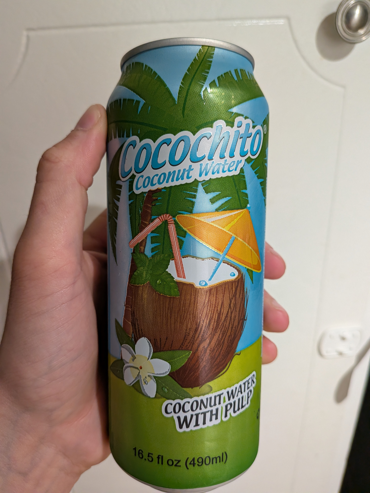

June 2025 · 16.5 fl oz · Still · Pasteurized · Added Sugar · Pulp
This is a heavily sweetened Thai water with added pulp. Only 85% juice, with added sodium and preservative.
Bitter and sweet at the same time, with highly variable pulp — some soft chunks, others hard and rind-like. Despite the ingredients showing this as a young coconut juice, I have a hard time reconciling that with the pasteurized, acrid flavor.